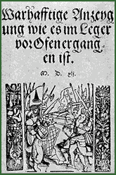

|  After the defeat of the Hungarian Army in the Battle of Mohács (1526), when central Hungary was incorporated into the Ottoman Empire, Suleyman I ordered Jews to be dragged to Turkey. In 1541 when Buda was taken by the Turks, the Jews returned from the towns nearby and from the other territories of the Ottoman Empire. During the Ottoman occupation of Hungary, Jews remained loyal to the tolerant Turks. After the expulsion of the invading Turks (1686), Jews were either murdered or taken captive. The few who were ransomed scattered in all directions. | ||